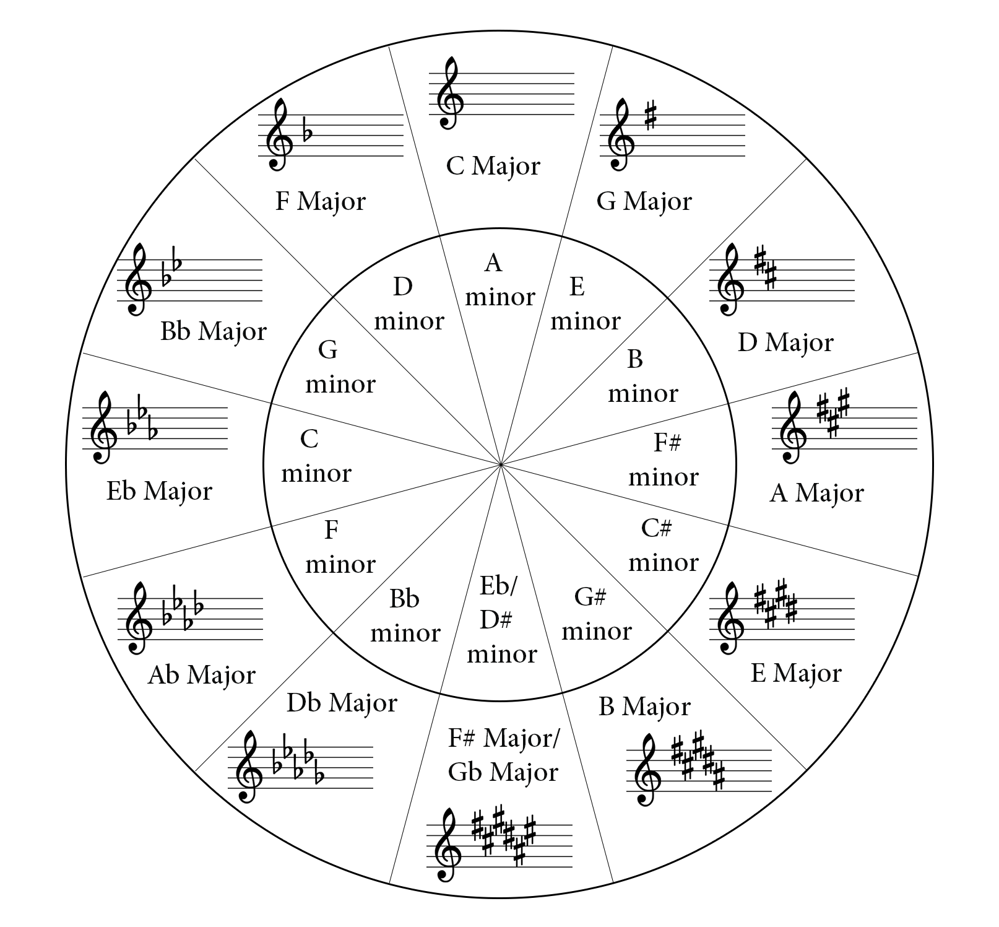

<div class="card">
    <div class="container">
    <h2 class="lesson-heading text-primary py-2">
        Level 2--A bit further now!
    </h2>
    <div class="icon" style="text-align:center;">
        <i class="fa fa-location-arrow fa-2x"></i>
      </div>
    <div class="card-text">
        <p>Now that we have understood the major, minor and perfect intervals, lets revisit the infamous Circle of Fifths!</p>
            <br>
            <p>In lesson 1, we found that the circle of fifths is called so because in order to go from one key to the next adjacent one, clockwise , we travel up a fifth. Now we look further. Note that going from C to G, we have to go a <b>perfect fifth</b> up the interval. Now, we putting some 'quality' to the interval, by saying that it is not a minor, nor a minor but a perfect or 7 half steps apart!</p>
            <p>Also notice that the keys in the inner circle are the 'relative minor' keys of the major keys outside, as the tonic is 3 half steps or semitones below the major tonic or first degree.</p>
            <p>Hence if someone asks the key signature of A minor... we count 3 semitones up from the root, get C as the relative major tonic (notice in the circle of fifth). So, we infer that the key signature of A minor is the same as C Major. C Major dosnt have any sharps or flats in its key signature, so will be that of A minor's.</p>
            <p>Now how to remember how many sharps or flats are present in a particular key?</p>
            <p>For figuring out the no. of sharps we remember the particular order: <b>F-C-G-D-A-E-B</b> or alternatively <b>F</b>ather <b>C</b>harles <b>G</b>oes <b>D</b>own <b>A</b>nd <b>E</b>nds <b>B</b>attle.</p>
            <p>This is the order the sharps come in provided that the key contains sharps in its key signature. We determine the sharps in this manner-</p>
            <p>C doesnt contain any sharps. To the right, notice from the figure the number of sharps increases. So, G has 1 sharp, D has 2 sharps, A has 3 sharps and so on. Now the sharps come in the order F-C-G-D-A-E-B. So G has F#, D has 2 sharps(F-C) namely, F# and C#, A has 3 sharps(F-C-G) namely, F#, C#, G# and so on.</p>
            <p>To the left of C, notice the no. of flats increases. There are no sharps in their key signatures. It follows the reverse pattern for flats: <b>B-E-A-D-G-C-F</b> or alternatively <b>B</b>attle <b>E</b>nds <b>A</b>nd <b>D</b>own <b>G</b>oes <b>C</b>harles' <b>F</b>ather.</p>
            <p>So going counter-clockwise from F, F has 1 flat (Bb), Bb has 2 flats(B-E) namely, Bb and Eb and so on.</p>
    </div>
    <a (click)="gotoLessonTwoFour()" class="btn btn-primary">Read More</a>
    
    </div>
</div>
